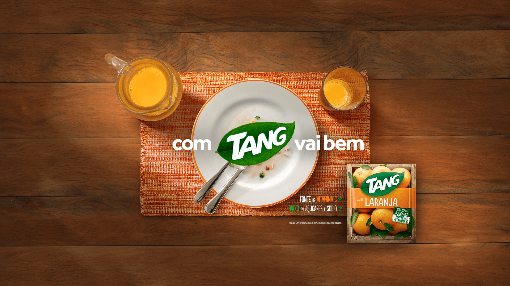
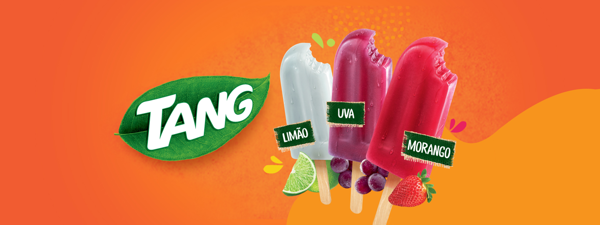

Seu Sabor Favorito!
 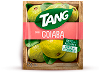
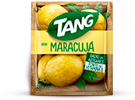
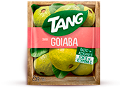
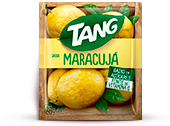
 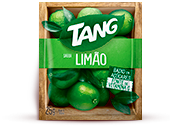
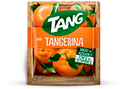
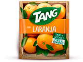
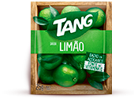
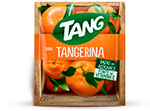
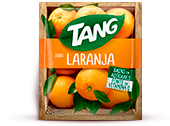
Desenvolvido pelo químico William Mitchell, foi registrado em 1957 e lançado no mercado norte-americano em 1959 pela General Foods. O refresco só começou a ser rentável para a empresa, quando a NASA utilizou o produto no Projeto Gemini, em meados da década de 1960, e disparou em vendas quando foi usado no Projeto Apollo, sendo levado a Lua, em 1969. Em 2012, a Kraft Foods criou a Mondelēz International, uma divisão para o negócio de guloseimas, que incluem o refresco, porém, foi em 1988 que a marca passou a ter ligação com a Kraft, já que em 1985, a General Foods foi comprada pela Philip Morris Companies e em 1988 a Philip comprou a Kraft. Em 1989 as divisões se uniram, formando a Kraft General Foods